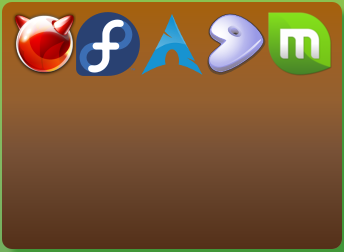

Flexbox Layouts
31 de mayo 2016¿Que es?
- Una forma relativamente nueva hacer layouts.
- Estandar de la W3C.
- Modelo de cajas flexibles.
¿Porque debería interesarme?
- Es facil de aprender.
- Hace una gran diferencia.
Conceptos básicos
Container
Como la palabra lo indica, son contenedores de otros elementos mas pequeños. Su función es agrupar elementos dentro de ellos.
Item
Los elementos que se encuentran dentro de los containers.
Container & Items

Propiedades
Atributos que modifican el comportamiento y la ubicación de los elementos en nuestra página
Imagen tomada de css-tricks.com
Imagen tomada de css-tricks.com
Imagen tomada de css-tricks.com
Imagen tomada de css-tricks.com
Imagen tomada de css-tricks.com
Práctica
http://flexboxfroggy.com/